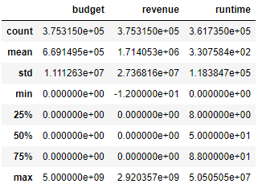
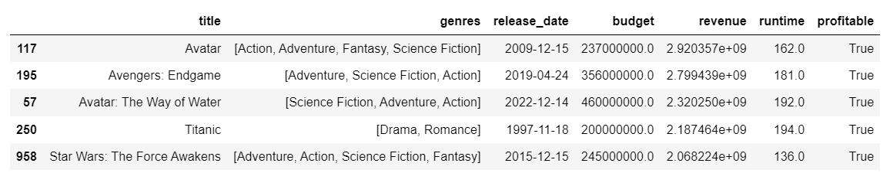
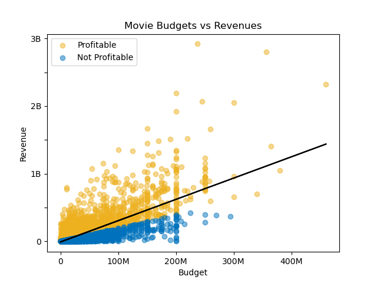
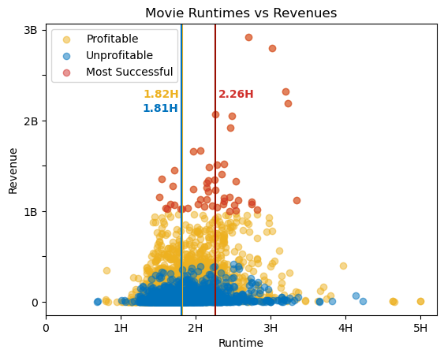
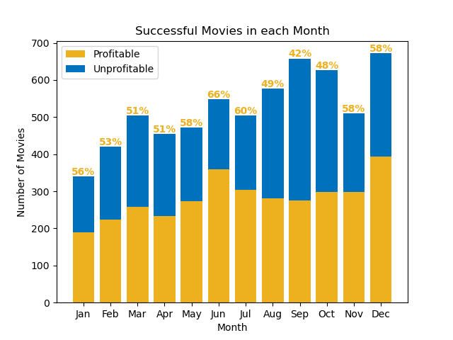
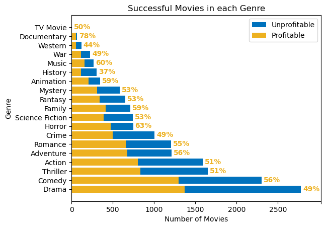

Crafting the Most Successful Movie of All Time

The years of 2022 and 2023 will haunt the nightmares of major movie studios for decades to come. Not only are two unions striking (effectively grinding the industry to a halt), a record number of movie releases have failed to turn a profit. It's estimated that Disney has lost a whopping $890 Million on only eight movies released in the span of just 12 months! And Disney is certainly not alone. DreamWorks spent $70 Million on an animated movie called "Teenage Kraken" and only managed a poor $40 Million at the box office. And after a staggering 9 years of production hell, Warner Bros finally released "The Flash" on a $200 Million budget. In one of the biggest box office bombs of all time, it only managed to rake in $268 Million (more on why this is so dreadful later).
In light of the disaster that is Hollywood right now, I thought it would be a fun exercise to scientifically craft the most profitable film possible. Maybe the big studios will take my advice on their next movies! When they're allowed to film again, that is. Our experiment starts with a database of movies, which anybody can find here: Movies Daily Update Dataset . This dataset includes twenty features, which we will have to whittle down until we are left with only the most important.
Features That Will Be Dropped
- id: An identification number that comes from the creation of the database. Not very useful to us.
- original_language: The language the film was made in. As we are focusing on just Hollywood, we're restricting our analysis to english movies. We will filter out non-english movies and then remove this feature.
- overview: A summary of the movie. As we are looking for characteristics, this is not helpful.
- popularity: A score given by the database which represents acclaim. While this sounds beneficial, we only care about profitibility in this experiment, not popularity.
- production_companies: A list of production companies involved in each film. Our perfect film should be studio-independent, so that anyone can profit from the work done here. 😉
- status: Indicates whether the movie has been released, is planned, has been cancelled, etc. Since we are analyzing profits, we will only keep released movies.
- tagline: The tagline of the movie. (Who could have guessed?) I'm already telling Hollywood how to make the perfect movie, I'm not marketing it for them too!
- vote_average: See popularity.
- vote_count: See popularity.
- credts: A list of actors involved with the film.
- poster_path: A route to find the poster for the movie. As you can imagine, not useful.
- keywords: A list of words/phrases that describe the movie.
- backdrop_path: See poster_path.
- recommendations: A list of id's for silimar movies. This could be interesting to derive for myself in a future project, but that's not why we're here today.
Once we filter our data to only inlcude english movies that have been released, we drop the extraneous columns and then focus on the
features that will actually impact our analysis. The first item of business is to
inspect our three numerical features: budget, revenue, and runtime, which we can do with the describe() function.

- To start, lets limit our movies to between 40 minutes (according to the Oscar's eligibility rules) and 1265 minutes (longest theatrical movie ever made).
- A quick google search shows that the largest all time budget for a movie is $460 million, which means we have to take care of the inaccuracy in that column. I could not find a budget for the 2013 movie "DeAD", so I dropped the single row, as that shouldn't affect the analysis.
- Next, we take care of the lower bounds of budget and revenue, which are filled with errors. So many in fact, that I cannot go through them all by hand. To combat this, I am cutting off any movie that has a budget lower than $218, as any studio could more than afford to fund such a film.
- On the flip side, I'm going to restrict our data set to movies that have made over 1 million dollars. This is an arbitrary number and can be adjusted, but I felt it was a nice breakpoint to ensure that all movies we analyze had even a modicum of success.
- Finally, we have to look at all null values still present in the data. Due to the small amount of nulls present (less than 1%), I have elected to drop all null rows. At least we have uber-clean data now, right?
Next on the list is the conversion of our release_date and genre features! Both of these features started as a string (a group of
characters) with individual entries separated by dashes. It will be much easier to work with the release_date data if we convert it
to a datetime object. Likewise, it will be much easier to work with the genre data if we convert each entry into its own list. 
Now, we have just one more step before the cool graphs, I promise! It is generally agreed that a movie must make
twice it's budget in revenue to be profitable, so I will be adding a column to denote whether a movie has passed this
threshold. This is what our data looks like now that we're done processing it:



